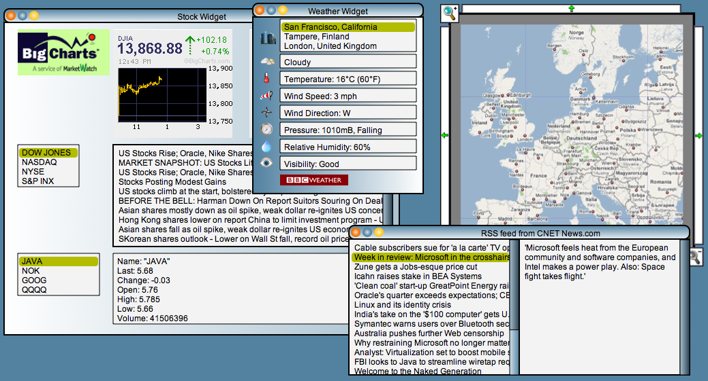

Lively Kernel Tutorial: (19) More Sample Applications and Widgets
In this example we have included widgets and applications that utilize
the asynchronous networking capabilities of Lively Kernel.
All the networking requests in these applications are made
asynchronously to avoid blocking the user interface.

Try it yourself! Try the various controls in the widgets below.